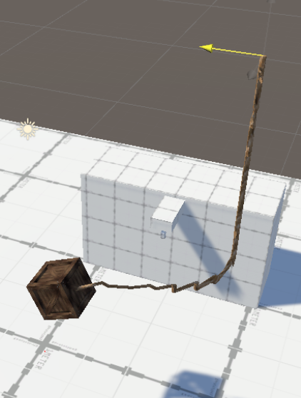
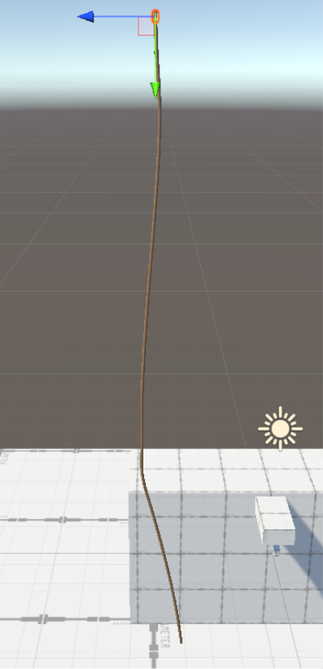

Portfolio
Concept Development Assets Visual Design Final Product & EffectConcept
Explanation
In my concept I want to help people who need to rehabilitate from arm injuries. For this rehabilitation I want the user of my VR experience to climb a rope. The setting is 17th century Amsterdam and the overall goal is to climb up a few stories on the side of the building. This would be done through a rope that hangs from the pully arm system that a lot of old houses in Amsterdam have. But the rope for this pulley system got stuck, needing the user to climb up and "fix" it. This allows the user to climb the rope. Making trhem able to start the exercise.
Goal
The goal of my experience was helping people who need to rehabilitate from arm injuries. Helping them by simulating simple arm movement. Letting them move up and down the rope. While enjoying the 17th century Amsterdam environment.
Development
Goal
The goal of my Unity development was to create the interaction of climbing a rope. In order to devide this big goal I devided it into smaller ones. First need to have realistic rope physics, making my first priority creating a realistic rope. Secondly there needed to be a form of climbing interaction. After those two goals would be finished the rest was just implementing all my assets.
Research
To make a realistic rope I research different ways to do this in Unity. I found this tutorial: Rope Physics - Unity Tutorials. Whichs makes a rope in Blender and uses the bones added in blender as nodes for the rope. It has a couple of scripts that make the rope behave in a physics maner. A more straight forward and easy method would be using Unity Joints like in this tutorial: Unity3D | Rope tutorial with joint - Smon
At first it seemed that a spring joint would be best suited. But after experimenting with these joints,
it performed poorly.
So, I researched more into Unity Joints and found this video explaining Configurable joints: Configurable Joints in Unity.
A configurable joint is basicly a spring joint, but with more customization, since it allows for the most customization of the joint itself.
This method made the rope behave and look a lot more natural.
For the research into climbing mechanics I found two videos to help implement climbing.
Getting Started with SteamVR 2.0 and VRTK | How To Make VR Climbing
Introduction to VR in Unity - PART 9 : CLIMBING
Both of these videos used different VR packages in unity. In the end I stuck with SteamVR since this seemed as the most stable version to work with.
Creation
My first attempt at making a realistic rope was with a script that creates its own joints.
These joints are in between all the rope bones I modelled in Blender.
But unfortunately, this ended up looking pretty bad. Also, it worked really jittery. As you can see in the two screenshots.


Then however I found a way to make a rope by instantiating cylinders that have a configurable joint that are connected through code.
Shown you can see on the bottom left image.
The rope itself is spawned at the start of the application. A simple script Instantiated an x amount of the rope part prefab.
A code snippit is shown on the right here.


Due to the faact that i contracted Covid over the last week of the Pressure Cooker, I wasn's able to implement the climbing interaction.
Evaluation
I never before tried making rope physics or a climbing mechanic in Unity, let alone VR. So I made quite the challenge for myself by setting these goals. With these goals unfortunately I did hit some roadblocks. Most notably in creating the climbing mechanic. The rope physics took a lot of bug fixing and retrying with different methods to implement. So in the end it took longer than expected, this resulted in not having enough time to implement the climbing interaction. As well as making me have less time for the other parts of my experience, like 3D assets. Next time I would like to keep the interaction part of my experience simpler. So I can focus more on other aspects of VR development.
Assets
Goal
The goal for my assets work was learning Blender and making a realistic Rope, Crate and environment for the setting of my experience.
Research
The research I did for this was on how to make a rope model in blender, I used this tutorial: Rope Physics - Unity Tutorials. Unfortunately, this ended up looking pretty bad. So I opted to make it work though development in Unity instead of a stand alone asset. So the Rope research continues in the Development part of my portfolio. Besides research for a rope model I looked at a videos on how to use the different tools blender has to offer and how to use some of the handy shortcuts. By far the most things I learned were the basics tought in the workshops.
Creation
For my crate I started with a basic cube and shaped it to the design seen in the picture here.
Also to add some more detail I made nails that are placed all around the model.
In the picture you see the nail before i added loads of them.

Evaluation
Since it was my first time really diving into what Blender has to offer it took some time to get used to the environment. But nonetheless I am proud of the skills I took up after such a short period of time. Even though I would have loved to make even more assets to spice up the environment.